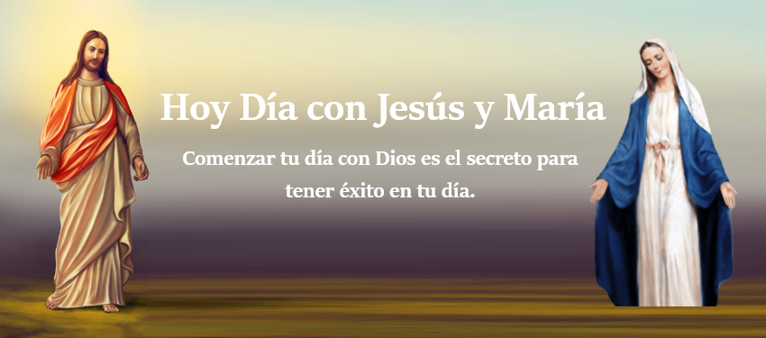

Martes, 3 de Agosto 2021

Meditación Diaria
Cuando usted escucha la palabra erosión, ¿qué le viene a la mente? Lo más probable es que piense en cómo se desgastan la tierra o las rocas durante un largo período de tiempo. De la misma manera, la erosión en nuestras vidas espirituales tiende a ocurrir poco a poco en el curso de meses o años.
¿Qué causa este estancamiento y deterioro espiritual? La respuesta suele ser la conformidad con los métodos y los valores del mundo, además del compromiso con el pecado. El proceso de erosión comienza en la mente cuando dejamos que nuestros pensamientos, actitudes y deseos sean moldeados por la manera de pensar del mundo. En poco tiempo, comenzamos a conformarnos con el proceder impío y pecaminoso que nos rodea.
¿Está su vida espiritual donde usted quiere que esté? ¿Se ha debilitado por las presiones del mundo? ¿Está dejando que las redes sociales y las opiniones de otras personas moldeen su mentalidad, deseos y ambiciones? Si es así, la manera de contrarrestar la erosión es volver al Señor en obediencia, y dejar que las Sagradas Escrituras renueven su mente con la verdad de Dios. A medida que aprenda a ver la vida desde la perspectiva del Señor, sus deseos y su conducta se ajustarán a su voluntad perfecta.

Lecturas de Hoy
Lectura I
En aquellos días, María y Aarón criticaron a Moisés porque había tomado por esposa a una mujer extranjera. Decían: “¿Acaso el Señor le ha hablado solamente a Moisés? ¿Acaso no nos ha hablado también a nosotros?” Y el Señor los oyó. Moisés era el hombre más humilde de la tierra.
De repente, el Señor les dijo a Moisés, a Aarón y a María: “Vayan los tres a la tienda de la reunión”. Y fueron los tres. Bajó el Señor en la columna de nube y se quedó en la puerta de la tienda. Llamó a Aarón y a María, y los dos se acercaron.
El Señor les dijo: “Escuchen mis palabras. Cuando hay un profeta entre ustedes, yo me comunico con él por medio de visiones y de sueños. Pero con Moisés, mi siervo, es muy distinto: él es el siervo más fiel de mi casa; yo hablo con él cara a cara, abiertamente y sin secretos, y él contempla cara a cara al Señor. ¿Por qué, pues, se han atrevido ustedes a criticar a mi siervo, Moisés?”
Y la ira del Señor se encendió contra ellos. Cuando él se fue y la nube se retiró de encima de la tienda, María estaba leprosa, blanca como la nieve. Aarón se volvió hacia María y vio que estaba leprosa.
Entonces Aarón le dijo a Moisés: “Perdónanos, Señor nuestro, el pecado que neciamente hemos cometido. Que no sea María como quien nace muerta del seno de su madre; mira su carne ya medio consumida por la lepra”. Entonces Moisés clamó al Señor, diciendo: “Señor, ¡cúrala por favor!”
Nm 12, 1-13
Salmo Responsorial
R. (cf 3a) Misericordia, Señor, hemos pecado.
Por tu inmensa compasión y misericordia,
Señor, apiádate de mí y olvida mis ofensas.
Lávame bien de todos mis delitos
y purifícame de mis pecados.
R. Misericordia, Señor, hemos pecado.
Puesto que reconozco mis culpas,
tengo siempre presentes mis pecados.
Contra ti solo pequé, Señor,
haciendo lo que a tus ojos era malo.
R. Misericordia, Señor, hemos pecado.
Es justa tu sentencia
y eres justo, Señor, al castigarme.
Nací en la iniquidad,
y pecador me concibió mi madre.
R. Misericordia, Señor, hemos pecado.
Crea en mí, Señor, un corazón puro,
un espíritu nuevo para cumplir tus mandamientos.
No me arrojes, Señor, lejos de ti,
ni retires de mí tu santo espíritu.
R. Misericordia, Señor, hemos pecado.
Del Salmo 50
Evangelio
En aquel tiempo, inmediatamente después de la multiplicación de los panes, Jesús hizo que sus discípulos subieran a la barca y se dirigieran a la otra orilla, mientras él despedía a la gente. Después de despedirla, subió al monte a solas para orar. Llegada la noche, estaba él solo allí.
Entre tanto, la barca iba ya muy lejos de la costa y las olas la sacudían, porque el viento era contrario. A la madrugada, Jesús fue hacia ellos, caminando sobre el agua. Los discípulos, al verlo andar sobre el agua, se espantaron y decían: “¡Es un fantasma!” Y daban gritos de terror. Pero Jesús les dijo enseguida: “Tranquilícense y no teman. Soy yo”.
Entonces le dijo Pedro: “Señor, si eres tú, mándame ir a ti caminando sobre el agua”. Jesús le contestó: “Ven”. Pedro bajó de la barca y comenzó a caminar sobre el agua hacia Jesús; pero al sentir la fuerza del viento, le entró miedo, comenzó a hundirse y gritó: “¡Sálvame, Señor!” Inmediatamente Jesús le tendió la mano, lo sostuvo y le dijo: “Hombre de poca fe, ¿por qué dudaste?”
En cuanto subieron a la barca, el viento se calmó. Los que estaban en la barca se postraron ante Jesús, diciendo: “Verdaderamente tú eres el Hijo de Dios”.
Terminada la travesía, llegaron a Genesaret. Apenas lo reconocieron los habitantes de aquel lugar, pregonaron la noticia por toda la región y le trajeron a todos los enfermos. Le pedían que los dejara tocar siquiera el borde de su manto; y cuantos lo tocaron, quedaron curados.
O bien:
Mt 15:1-2. 10-14
En aquel tiempo, se acercaron a Jesús unos escribas y unos fariseos venidos de Jerusalén y le preguntaron: “¿Por qué tus discípulos quebrantan la tradición de nuestros mayores y no se lavan las manos antes de comer?”
Jesús llamó entonces a la gente y le dijo: “Escuchen y traten de comprender. No es lo que entra por la boca lo que mancha al hombre; lo que sale de la boca, eso es lo que mancha al hombre”.
Se le acercaron entonces los discípulos y le dijeron: “¿Sabes que los fariseos se han escandalizado de tus palabras?” Jesús les respondió: “Las plantas que no haya plantado mi Padre celestial, serán arrancadas de raíz. Déjenlos; son ciegos que guían a otros ciegos. Y si un ciego guía a otro ciego, los dos caerán en un hoyo”.
Mt 14, 22-36

Devoción del Mes
Agosto es el mes dedicado a el Inmaculado Corazón de María. Ésta fiesta está íntimamente vinculada con la del Sagrado Corazón de Jesús, la cual se celebra el día anterior, viernes. Ambas fiestas se celebran, viernes y sábado respectivamente, en la semana siguiente al domingo de Corpus Christi. Los Corazones de Jesús y de María están maravillosamente unidos en el tiempo y la eternidad desde el momento de la Encarnación. La Iglesia nos enseña que el modo más seguro de llegar a Jesús es por medio de María. Por eso nos consagramos al Corazón de Jesús por medio del Corazón de María.
La fiesta del Corazón Inmaculado de María fue oficialmente establecida en toda la Iglesia por el papa Pío XII, el 4 de mayo de 1944, para obtener por medio de la intercesión de María “la paz entre las naciones, libertad para la Iglesia, la conversión de los pecadores, amor a la pureza y la práctica de las virtudes”. Esta fiesta se celebra en la Iglesia todos los años el sábado siguiente al segundo domingo después Pentecostés.
Después de su entrada a los cielos, el Corazón de María sigue ejerciendo a favor nuestro su amorosa intercesión.

Oraciones Diarias
Comenzar
En el nombre del Padre, y del Hijo, y del Espíritu Santo
Oración de la Mañana
Oh, Jesús, a través del Inmaculado Corazón de María,
te ofrezco mis oraciones, trabajo, alegrías, sufrimientos de este día,
en unión al Santo Sacrificio de la Misa para el mundo.
Te los ofrezco por los méritos de tu Sagrado Corazón:
la salvación de las almas, enmienda de los pecados, la reunión de todos los cristianos;
te los ofrezco por nuestros obispos y por los Apóstoles de la oración y de manera particular
por aquellos que el Santo Padre escogió durante este mes.
Oración por el Papa Francisco
Dios nuestro, pastor y guía de todos los fieles,
mira con bondad a tu hijo Francisco,
a quien constituiste pastor de tu Iglesia,
y sostenlo con tu amor,
para que con su palabra y su ejemplo
conduzca al pueblo que le has confiado
y llegue, juntamente con él, a la vida eterna.
Por nuestro Señor Jesucristo, tu Hijo,
que vive y reina contigo en la unidad del Espíritu Santo
y es Dios por los siglos de los siglos.
Padre Nuestro
Padre nuestro que estás en el cielo,
santificado sea tu Nombre;
venga a nosotros tu Reino;
hágase tu voluntad
en la tierra como en el cielo.
Danos hoy
nuestro pan de cada día;
perdona nuestras ofensas,
como también nosotros perdonamos
a los que nos ofenden;no nos dejes caer en la tentación,
y líbranos del mal.
Ave María
Dios te salve, María, llena eres de gracia, el Seńor es contigo.
Bendita tú eres entre todas las mujeres, y bendito es el fruto de tu vientre, Jesús.
Santa María, Madre de Dios,
ruega por nosotros, pecadores,
ahora y en la hora de nuestra muerte.
Gloria al Padre
Gloria al Padre
y al Hijo
y al Espíritu Santo.
Como era en el principio,
ahora y siempre,
por los siglos de los siglos.
Comunión Espiritual
Jesús mío,
creo que estás real y verdaderamente en el Cielo
y en el Santísimo Sacramento del altar.
Te amo por sobre todas las cosas
y deseo vivamente recibirte dentro de mi alma,
pero no pudiendo hacerlo ahora sacramentalmente,
ven al menos espiritualmente a mi corazón.
Y como si ya te hubiese recibido,
Te abrazo y me uno del todo a Ti.
Señor, no permitas que jamás me aparte de Ti. Amén.
Consagración a María
Bendita sea tu pureza
y eternamente lo sea,
pues todo un Dios se recrea
en tan graciosa belleza.
A ti, celestial Princesa,
Virgen sagrada Maria,
te ofrezco desde este día
alma, vida y corazón.
Mírame con compasión,
no me dejes, Madre mía,
ahora y en mi última agonía.
Oración a San José
Glorioso patriarca San José,
cuyo poder sabe hacer posibles las cosas imposibles,
en en mi ayuda en estos momentos de angustia y dificultad.
Toma bajo tu protección las situaciones
tan graves y difíciles que te confío,
para que tengan una buena solución.
Mi amado Padre,
toda mi confianza está puesta en ti.
Que no se diga que te haya invocado en vano
y, como puedes hacer todo con Jesús y María,
muéstrame que tu bondad es tan grande como tu poder.
Oración al ángel de mi guarda
Ángel de mi guarda,
dulce compañía,
no me desampares,
ni de noche ni de día,
no me dejes solo, que me perdería,
hasta que me pongas, en paz y alegría,
con todos los santos, Jesús y María,
te doy el corazón y el alma mía
que son mas tuyos que míos.
Oración a san Miguel arcángel
San Miguel Arcángel,
defiéndenos en la batalla.
Sé nuestro amparo
contra las perversidad y asechanzas
del demonio.
Reprímale Dios, pedimos suplicantes,
y tu príncipe de la milicia celestial
arroja al infierno con el divino poder
a Satanás y a los otros espíritus malignos
que andan dispersos por el mundo
para la perdición de las almas.
Acabar
En el nombre del Padre, y del Hijo, y del Espíritu Santo.
Amén.